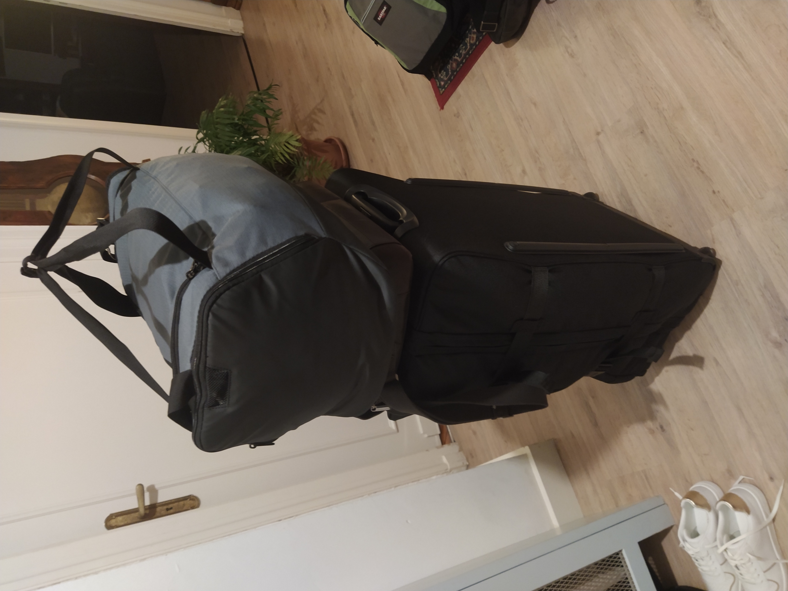
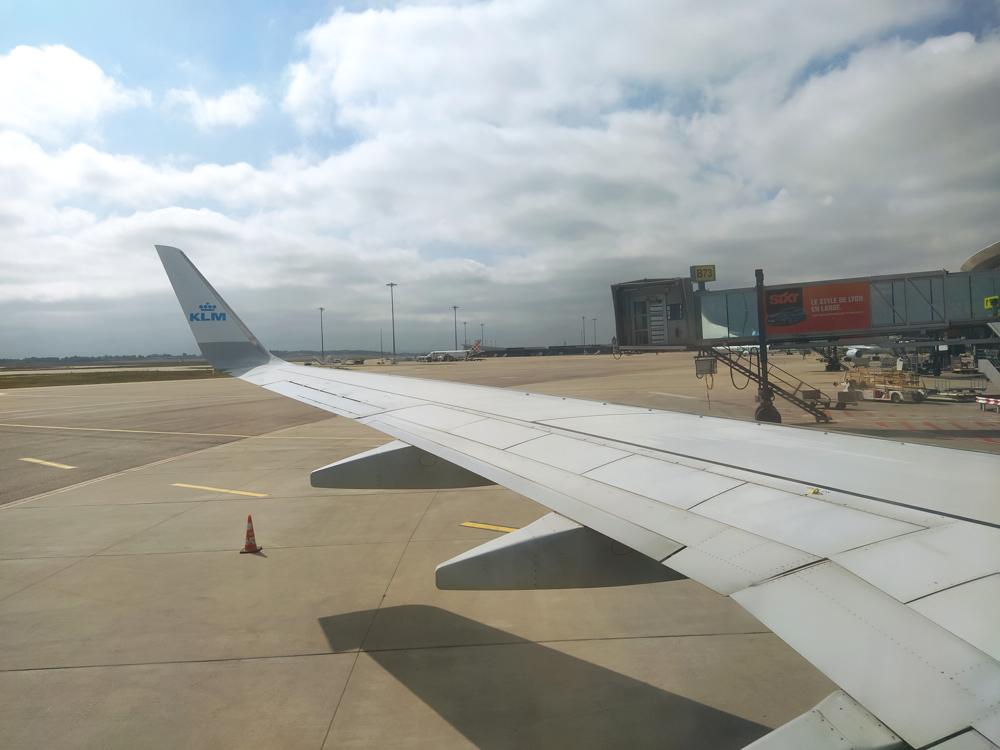
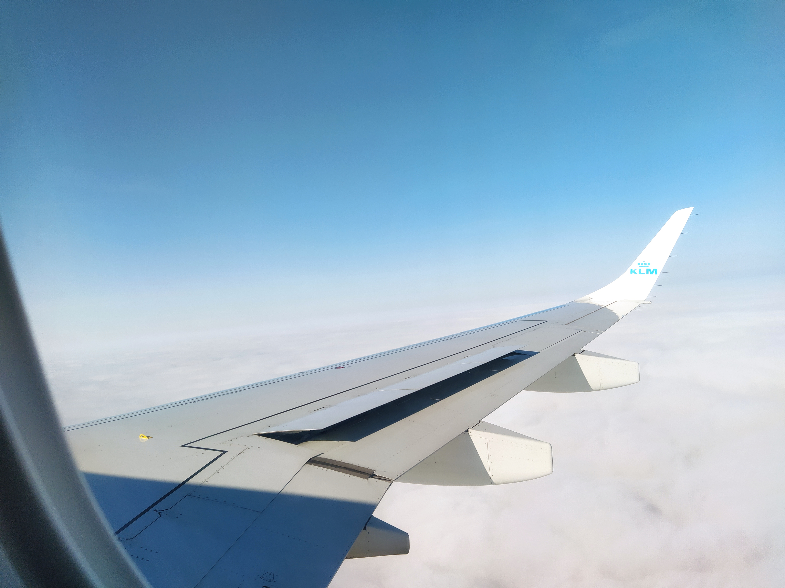
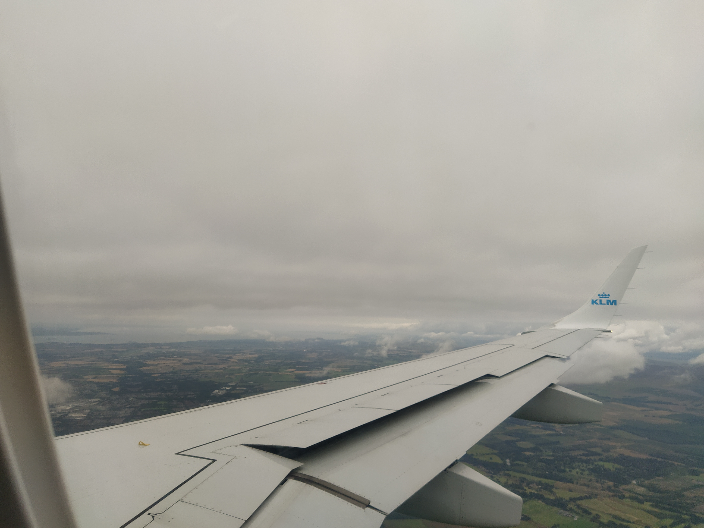
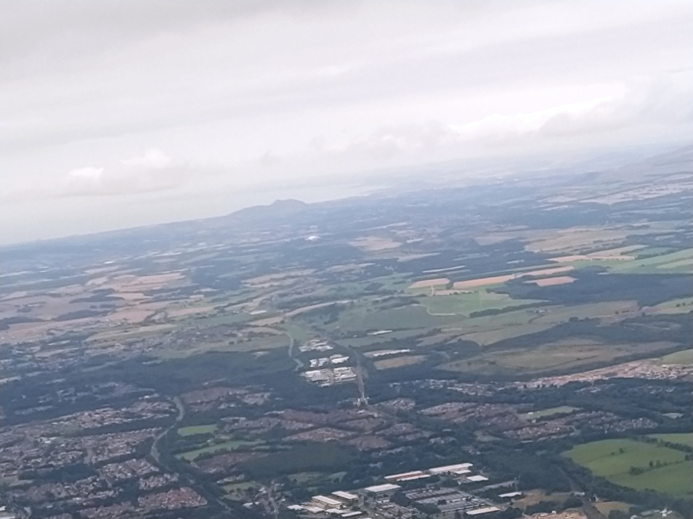
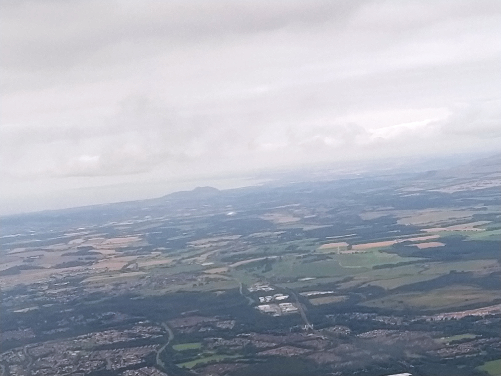
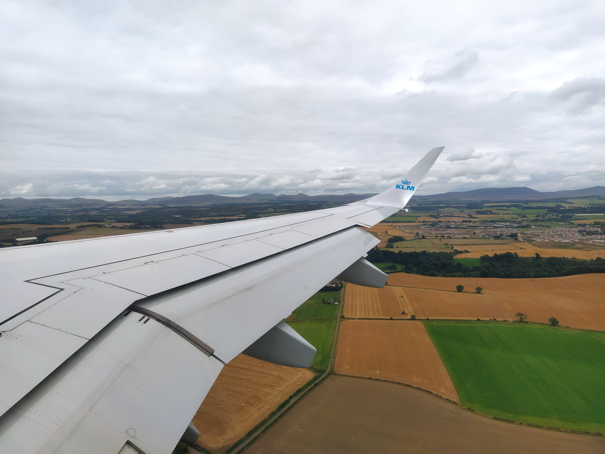

31 August 2021
I came to Edinburgh by plane (KL1414 from Lyon to Amsterdam and then KL1289 from Amsterdam to Edinburgh). It took me the whole day: we left Saint-Etienne at 7am and I reached Edinburgh around 6:30pm.
 My luggage.
 On the way to Lyon.
On the way to Lyon.
 My boarding pass.
My boarding pass.
My plane in Lyon.
 My plane in Amsterdam.
My plane in Amsterdam.
Flight from Amsterdam to Edinburgh.
Flight from Amsterdam to Edinburgh.
Flight from Amsterdam to Edinburgh.
Flight from Amsterdam to Edinburgh. Arthur's seat in the back.
Flight from Amsterdam to Edinburgh.